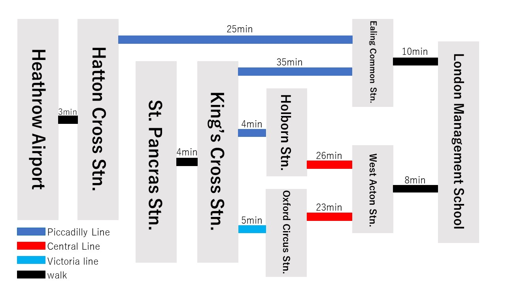

How to access
For people coming by transportation
Located in Acton, West London Ealing London. Located approximately 45 minutes from central London. The area is very secure and many foreigners live there.
| From central London | From King's Cross Station, a 4-minute walk from St. Pancras Station, take Piccadilly Line to Ealing Common Station |
|---|---|
| From King's Cross Station, a 4 minutes walk from St. Pancras Station, take Piccadilly line to Holborn Station. Change to Central Line to West Acton Station | |
| From King's Cross Station, a 4 minutes walk from St. Pancras Station, take the Victoria line to Oxford Circus Station. Change to Central Line to West Acton Station | |
| From the airport | From Hatton Cross Station, a 3 minute walk from Heathrow Airport, take Piccadilly Line to Ealing Common Station |
